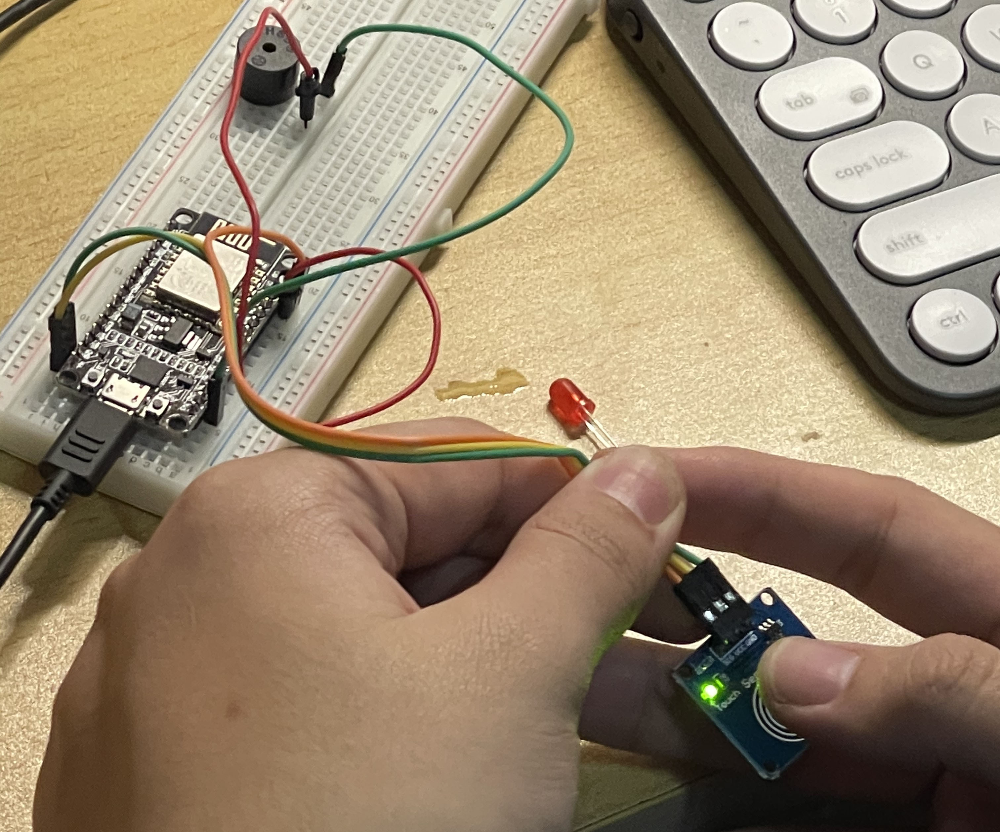

TESTING
CODE DISPLAY
#include <ESP8266WiFi.h>
#include <PubSubClient.h>
#include <ArduinoJson.h>
#include "aliyun_mqtt.h"
// 定义引脚编号
const int trigPin = 2; //D4
const int echoPin = 0; //D3
const int RedLed = 5; //D1
// 定义变量
long duration;
int distance;
bool state;//记录灯的开关状态
/* 连接您的WIFI SSID和密码 */
#define WIFI_SSID "GM2.4"//替换自己的WIFI
#define WIFI_PASSWD "a0000000"//替换自己的WIFI
/* 设备的三元组和其余信息*/
#define PRODUCT_KEY "a1rsFugCSpT" //替换自己的PRODUCT_KEY
#define DEVICE_NAME "1020_Dis_01" //替换自己的DEVICE_NAME
#define DEVICE_SECRET "80ce51978dbc2698a182ef54f7296aaa"//替换自己的DEVICE_SECRET
#define DEV_VERSION "1020_Dis-v1.0-20201215" //固件版本信息
#define ALINK_BODY_FORMAT "{\"id\":\"123\",\"version\":\"1.0\",\"method\":\"thing.event.property.post\",\"params\":%s}"
#define ALINK_TOPIC_PROP_POST "/sys/" PRODUCT_KEY "/" DEVICE_NAME "/thing/event/property/post"
#define ALINK_TOPIC_PROP_POSTRSP "/sys/" PRODUCT_KEY "/" DEVICE_NAME "/thing/event/property/post_reply"
#define ALINK_TOPIC_PROP_SET "/sys/" PRODUCT_KEY "/" DEVICE_NAME "/thing/service/property/set"
#define ALINK_METHOD_PROP_POST "thing.event.property.post"
#define ALINK_TOPIC_DEV_INFO "/ota/device/inform/" PRODUCT_KEY "/" DEVICE_NAME ""
#define ALINK_VERSION_FROMA "{\"id\": 123,\"params\": {\"version\": \"%s\"}}"
unsigned long lastMs = 0;
WiFiClient espClient;
PubSubClient mqttClient(espClient);
void init_wifi(const char *ssid, const char *password)
{
WiFi.mode(WIFI_STA);
WiFi.begin(ssid, password);
while (WiFi.status() != WL_CONNECTED)
{
Serial.println("WiFi does not connect, try again ...");
delay(500);
}
Serial.println("Wifi is connected.");
Serial.println("IP address: ");
Serial.println(WiFi.localIP());
}
void mqtt_callback(char *topic, byte *payload, unsigned int length)
{
Serial.print("Message arrived [");
Serial.print(topic);
Serial.print("] ");
payload[length] = '\0';
Serial.println((char *)payload);
if (strstr(topic, ALINK_TOPIC_PROP_SET))
{
StaticJsonBuffer<100> jsonBuffer;
JsonObject &root = jsonBuffer.parseObject(payload);
if (!root.success())
{
Serial.println("parseObject() failed");
return;
}
}
}
void mqtt_version_post()
{
char param[512];
char jsonBuf[1024];
//sprintf(param, "{\"MotionAlarmState\":%d}", digitalRead(13));
sprintf(param, "{\"id\": 123,\"params\": {\"version\": \"%s\"}}", DEV_VERSION);
// sprintf(jsonBuf, ALINK_BODY_FORMAT, ALINK_METHOD_PROP_POST, param);
Serial.println(param);
mqttClient.publish(ALINK_TOPIC_DEV_INFO, param);
}
void mqtt_check_connect()
{
while (!mqttClient.connected())//mqtt���
{
while (connect_aliyun_mqtt(mqttClient, PRODUCT_KEY, DEVICE_NAME, DEVICE_SECRET))
{
Serial.println("MQTT connect succeed!");
//client.subscribe(ALINK_TOPIC_PROP_POSTRSP);
mqttClient.subscribe(ALINK_TOPIC_PROP_SET);
Serial.println("subscribe done");
mqtt_version_post();
}
}
}
void mqtt_interval_post()
{
char param[512];
char jsonBuf[1024];
sprintf(param, "{\"LightSwitch\":%d}",state);
sprintf(jsonBuf, ALINK_BODY_FORMAT, param);
Serial.println(jsonBuf);
boolean d = mqttClient.publish(ALINK_TOPIC_PROP_POST, jsonBuf);
if(d){
Serial.println("publish LightSwitch success");
}else{
Serial.println("publish LightSwitch fail");
}
}
void setup()
{
Serial.begin(9600);
Serial.println("Demo Start");
init_wifi(WIFI_SSID, WIFI_PASSWD);
mqttClient.setCallback(mqtt_callback);
pinMode(trigPin, OUTPUT);// 将trigPin设置为输出
pinMode(echoPin, INPUT); // 将echoPin设置为输入
pinMode(RedLed, OUTPUT); //
}
// the loop function runs over and over again forever
void loop()
{
delay(1000);
// Clears the trigPin
digitalWrite(trigPin, LOW);
delayMicroseconds(2);
//将trigPin设置为HIGH状态10微秒
digitalWrite(trigPin, HIGH);
delayMicroseconds(10);
digitalWrite(trigPin, LOW);
// 读取echoPin，以微秒为单位返回声波传播时间
duration = pulseIn(echoPin, HIGH);
// 计算距离
distance= duration*0.034/2;
// 打印距离在串行监视器
Serial.print("Distance: ");
Serial.println(distance);
//控制灯的开关
if(distance<100)
{
digitalWrite(RedLed,HIGH);
state=1;
}
else
{
digitalWrite(RedLed,LOW);
state=0;
}
if (millis() - lastMs >= 20000)
{
lastMs = millis();
mqtt_check_connect();
/* Post */
mqtt_interval_post();
}
mqttClient.loop();
}
With the great help of the 924 team, we used nodemcu to achieve HC-SR04 ranging, transmit the signal to the led, and achieve real-time synchronization of aliyun.
Team work development process
